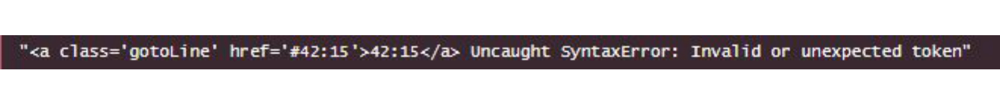

The Merits of Coding Standards
21 Sep 2023Introduction
“If you can only implement one software engineering technique to improve quality, it should be coding standards.” The validity of this quote relies upon what one considers quality code; does quality refer to readability? Documentation? The ability to get the job done correctly and bugfree? Or perhaps some combination of these attributes? I suppose if you mainly consider code quality to be the overall readability and neatness of the code, then coding standards such as ESLint would naturally be rather essential. It can indeed help those learning a language by pointing out errors and mistakes at a glance, but is it really an essential download for every project? Overall, having experienced ESLint for a week, I would say that it is mildly useful, but also slightly annoying in some aspects.
The Pros
To begin, ESLint definitely does a great job of what it’s meant to do: improving your code’s readability and helping to catch mistakes. For me, the most essential of its features is highlighting every error in your code and compiling it into a list that tells you which line the issue is found on. This is particularly convenient when compared to trying to trace each error back all the way from the console.

This can be especially useful for those learning a language, who may not know all the syntax and caveats of a language. The readability and neatness that it brings to your code can certainly not be understated either; my code hasn’t looked this formal and nice in quite awhile.
The “Cons”
In contrast to the few but essential upsides of ESLint, its downsides seem numerous but not so important. First and foremost is the fact that it highlights many “issues” that don’t really impact the code. Things such as spaces between certain elements, or an extra blank line at the end of the file don’t really impact your code’s functionality and would otherwise seem to me to be simply preference based.

Such unimpactful marks make it seem unnecessary to pay heed to them unless you are required to adhere to them. As such, I often found myself simply coding as usual until my program was completely functional, then taking a minute or two after to fix all the “mistakes” pointed out by ESLint that honestly made no difference in the end.
Moreover, while it does provide admittedly useful error reading, you could just as easily find those errors normally, depending on IDE (although I concede I do not have enough experience without ESLint to say this definitely), without the largely pointless list of errors that ESLint would generate. Thus, though I think it can be helpful, it mostly feels like it only makes your code look nicer rather than actually helping with functionality, making it feel somewhat annoying to use.
The Verdict
To be honest, I don’t really have any strong feelings about ESLint. I suppose it is somewhat useful, even though you don’t really feel its impact beyond having to fix a few non-essential “errors” at the end of a coding session. This can be annoying in a scenario where you have a fixed amount of time, such as timed exercises, but the minor amount of time it requires is rather insignificant in the grand scheme of things. Additionally, when I code, I usually prioritize functionality; everything else is secondary, so coding standards like ESLint are not something I would usually consider particularly important, though it can be useful at points. Thus, I maintain a fairly neutral view towards ESLint, at least at present.